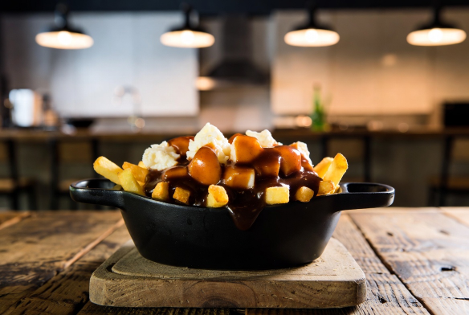

Home
Glorious Poutine

Description
Behold, the poutine: a cast-iron cauldron of golden fries, crisp as a winter morning, submerged beneath a gravy
tsunami—rich, beefy, and unrepentantly glossy. Scattered like rogue snowdrifts are squeaky cheese curds, melting
with the reluctance of a teenager asked to tidy their room. The whole steamy edifice squats on its wooden throne,
daring you to resist its caloric coup d'état.
Ingredients
- Golden fries (crisp enough to cut glass, hot from the fryer)
- Squeaky cheese curds (fresh, white, and mildly offended by heat)
- Beef gravy (velvety, dark, and plotting world domination)
- Cast-iron skillet (for dramatic presentation and third-degree burns)
- Pinch of audacity (serves four, or one with regret)
- Optional snow shovel (for portion control)
Steps
- Fry the chips until they’re golden and audacious, hot enough to make a snowman weep.
- Tumble them into the cast-iron skillet like contraband into a smuggler’s hold.
- Scatter cheese curds willy-nilly—fresh ones that squeak like a politician caught fibbing.
- Drown the lot in steaming beef gravy, poured with the abandon of a tabloid headline.
- Watch the curds surrender and wilt, forming molten white islands in a brown sea.
- Serve at once, before gravity or common sense intervenes.
- Eat with a fork, or abandon dignity and use the snow shovel.